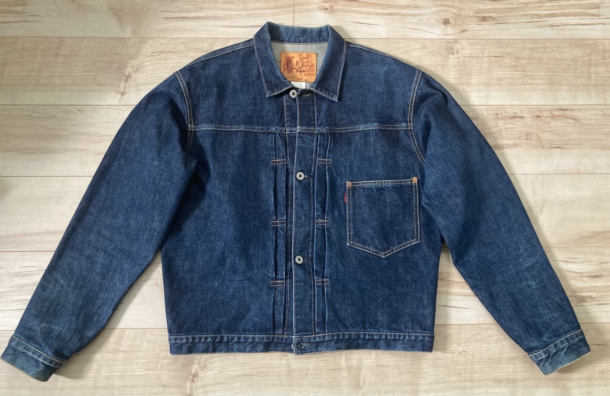
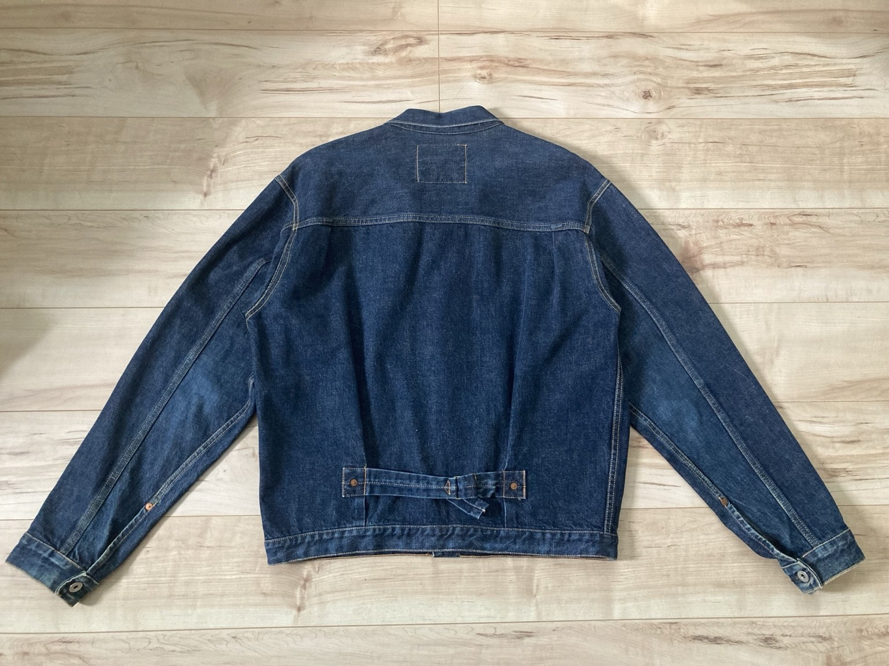
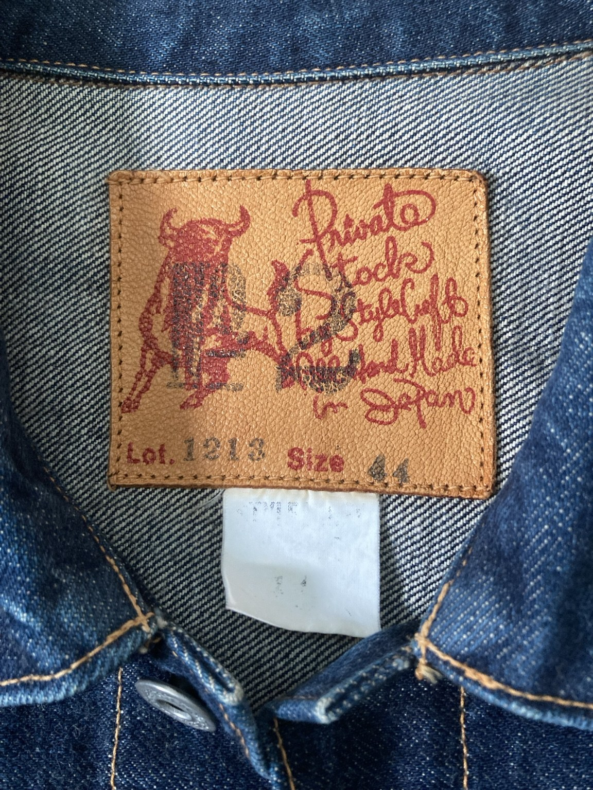

Front

DENIM FADE LAB / EVIS LOT.1213
初期EVISのデニムジャケットを、実物写真とディテールで記録します。
今回の個体はLot.1213、サイズ44。バッファローパッチ、Uなしの「EVIS」表記、シンチバックなどが確認できる初期EVISのデニムジャケットです。
サイズ44はこの個体を特徴づける情報として記録します。希少性については市場全体を断定せず、所有個体の実寸やディテールを今後追加して資料性を高めます。



写真をクリックすると拡大表示できます。